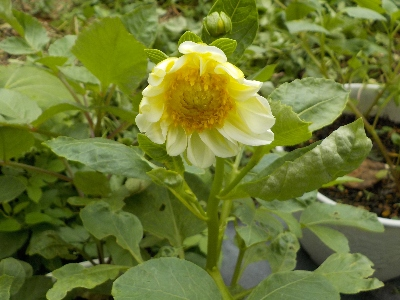
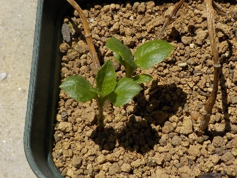
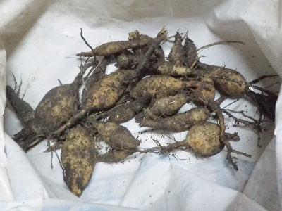
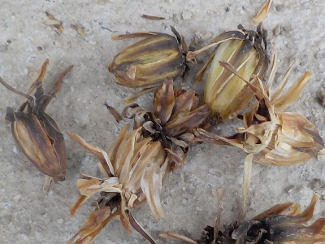
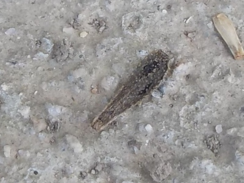
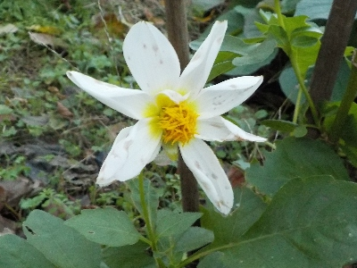
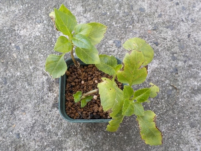
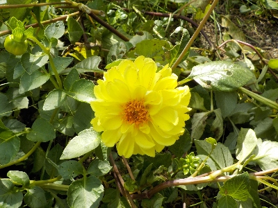
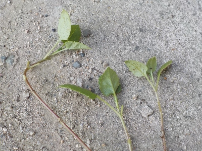

遊びで植物を育てよう
2025/08/09
今年種蒔きしたダリが咲きました。

春にタネを蒔いたダリアが咲きました。鉢植えのせいか高さが低くて可愛いです。
小さいと支柱がいらないのでいいですね。
【ダリアTOP】
【花TOP】
【園芸TOP】
2025/05/10
去年の秋に挿し芽したダリアから芽が出ました。

挿し芽してから寒さで枯れるまでの期間が短かったので、越冬は無理かと思っていましたが復活しました。
良かった良かった。でも葉っぱが小さいな。大きく育つまでに時間がかかりそうです。
【ダリアTOP】
【花TOP】
【園芸TOP】
2024/12/29
プランターのダリアの球根を回収しました。

球根が増えました。
初めて球根を掘ったんですが、球根の茎を取ったり分球したらダメなんですね。
なのでこれらは使えないかもしれないです。
タネを採っておいて良かった。
【ダリアTOP】
【花TOP】
【園芸TOP】
2024/12/07
ダリアのタネを収穫しました。

これくらいの明るい茶色状態でタネが採れるんですね。
房が開くとタネが飛んでいく仕組みっぽいです。

タネは黒くて平べったいものでした。風が吹いたらよく飛びそうです。
【ダリアTOP】
【花TOP】
【園芸TOP】
2024/11/24
たぶんこれが今年最後のダリア。

ダリアが一輪だけ咲いていました。きっとこれで今年は終わりですね。
長期間楽しめました。後はタネ採りと球根掘りかな。
【ダリアTOP】
【花TOP】
【園芸TOP】
2024/11/07
ダリアの黒くなった花柄を回収しました。

タネがあるかも？と思い黒い花柄を回収しました。
バラバラにしてみましたが、タネっぽいものはありませんでした。発育が悪かったのかな？
秋に花が咲いたものは花柄がまだ緑色なので、それが茶色くなったらまた収穫しようと思っています。
【ダリアTOP】
【花TOP】
【園芸TOP】
2024/11/04
ダリアの鉢底から根っこが出ていました。

挿し芽のダリアから根っこが出てました。でももう11月です。そろそろ枯れるんじゃないかなー。
とりあえず日向の軒下に鉢を移動しました。少しは暖かいと思うので、もう少し成長できるかな。
【ダリアTOP】
【花TOP】
【園芸TOP】
2024/10/06
支柱がないのでダリアが横たわって咲いています。

自立できないのが残念です。
ちゃんと支柱を立てないと駄目ですね。そう思うとダリアって面倒だな。でもたいした手間じゃないか。
【ダリアTOP】
【花TOP】
【園芸TOP】
2024/09/28
ダリアの挿し芽をしました。

ダリアの挿し芽ってやったことなかったので、キキョウの挿し芽のついでにしました。
ダリアって派手なので、なんか自宅の庭に合わない気がするんですよね。なので刺し芽していませんでした。
ちなみにこの茎は花が咲いていないものから採ったので、何色の花か不明です。
これが成功したら、この色をメインに育てようかな。
【ダリアTOP】
【花TOP】
【園芸TOP】
ダリアはプランターがいいかな。
【おいしいものを食べよう。】【たくさん寝よう。】
【ソロ活をしよう!】【季節感のあることをしよう。】【動画視聴はほどほどに。】【当サイトの全てのコンテンツは無断転載禁止です。】